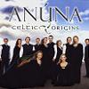

Celtic Lyrics Corner > Artists & Groups > Anúna > Celtic Origins
|  |
Celtic Origins
(2007) |
| Tracks : |
1.
The Rising Of The Sun
2. Siúil A Rúin 3. Gaudete 4. Our Wedding Day 5. Pie Jesu 6. Ceann Dubh Dílis 7. August 8. Sanctus 9. Kells 10. Greensleeves 11. Scarborough Fair 12. I Dreamt I Dwelt In Marble Halls 13. Fionnghuala 14. The Flower Of Maherally 15. Aisling 16. If All She Has Is You 17. Dúlamán 18. Sí Do Mhaimeo Í 19. Annie's Song |